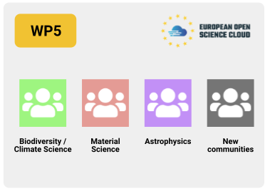
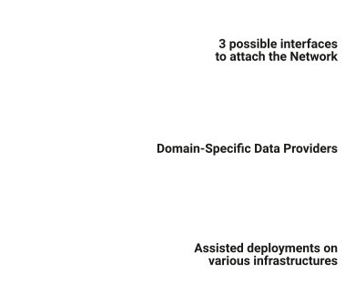
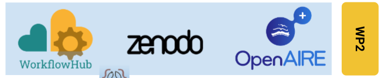
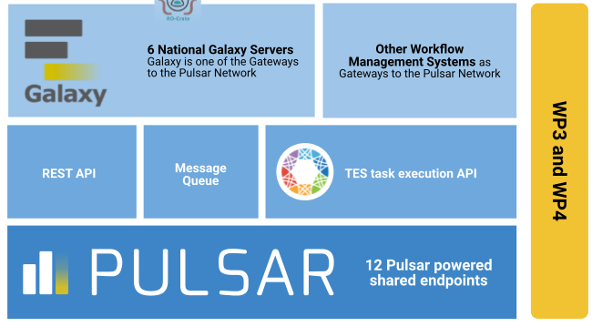
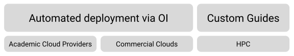
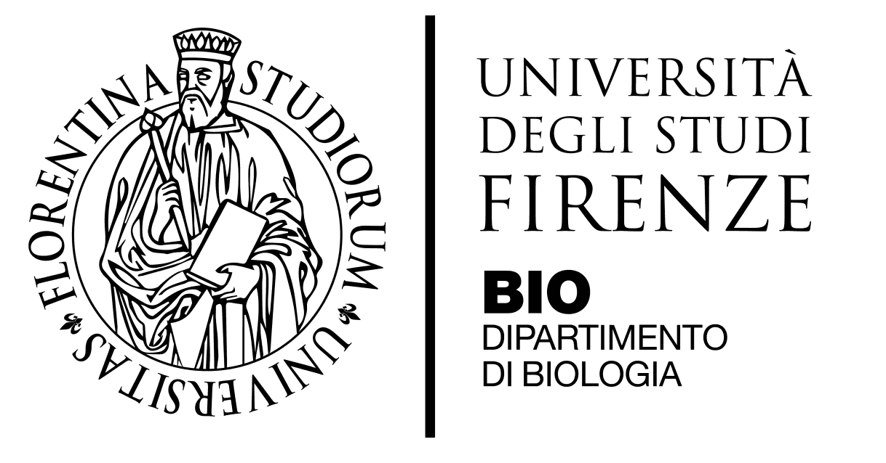
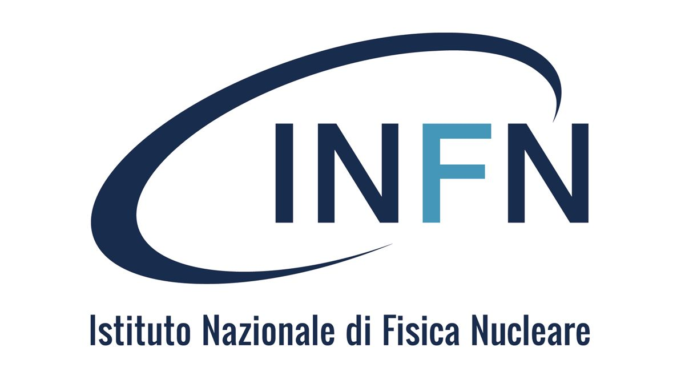
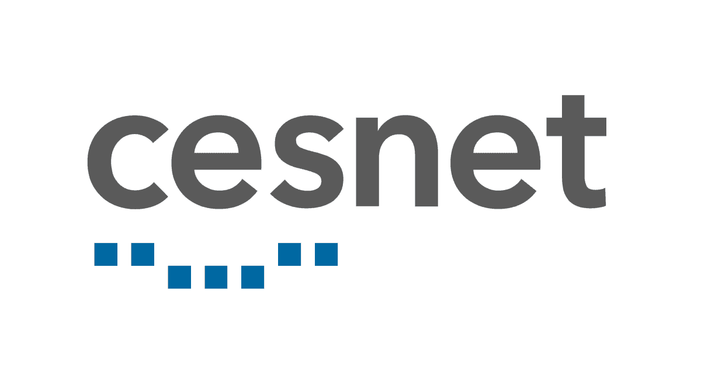
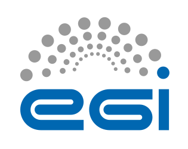

Project · EOSC · Horizon Europe
EuroScienceGateway
Ended · Aug 2025Improving computational workflows in Galaxy by maturing Pulsar Network and publishing computational workflows as FAIR Digital Objects.
This project has ended
EuroScienceGateway ran from September 2022 to August 2025. This page keeps its objectives, results, partners and news as a record. Events are listed as past events.
Project facts
- Status
- Ended
- Duration
- Sep 2022 – Aug 2025 (36 months)
- Programme
- Horizon Europe · HORIZON-INFRA-2021-EOSC-01-04
- EU grant
- 101057388 (external site)
- UKRI grant
- 10038963 (external site)
- Partners
- 19 organisations
Project summary
In the past decade, many scientific domains have been transformed into data-driven disciplines relying on the exchange and integration of internationally distributed data. Exploiting this data is still a laborious and largely manual task, prone to losses and errors, and increasingly specialized beyond most users technical capabilities. FAIR practices are encouraged but their adoption curve is steep. The needs for compute and data resources, tools, and application platforms are often domain-specific.
Many scientists struggle to navigate this intricate ecosystem. Generally, researchers do not possess the computing skills to effectively use the HPC or Cloud platforms they need. Thus, new approaches are needed to enable all researchers, with widely ranging digital skills, to efficiently use the diverse computational infrastructures available across Europe, for asynchronous and for interactive applications.
EuroScienceGateway will leverage a distributed computing network across 13 European countries, accessible via 6 national, user-friendly web portals, facilitating access to compute and storage infrastructures across Europe as well as to data, tools, workflows and services that can be customized to suit researchers’ needs. At the heart of the proposal workflows will integrate with the EOSC-Core. Adoption, development and implementation of technologies to interoperate across services, will allow researchers to produce high-quality FAIR data, available to all in EOSC. Communities across disciplines -- Life Sciences, Climate and Biodiversity, Astrophysics, Materials science -- will demonstrate the bridge from EOSC's technical services to scientific analysis.
EuroScienceGateway will deliver a robust, scalable, seamlessly integrated open infrastructure for data-driven research, contributing an innovative and customizable service for EOSC that enables operational open and FAIR data and data processing, empowering European researchers to embrace the new digital age of science.
Objectives
Objective 1
Accessible e-Infrastructure resources for European scientists to enable pioneering data-driven research across scientific domains.
Objective 2
Support the varieties of analysis types and diverse usage patterns through efficient and smart job distribution to appropriate and sustainable infrastructures.
Objective 3
The application of FAIR principles to workflows and adoption of FAIR Digital Objects to stimulate reusable and reproducible research and enable the EOSC Interoperability Framework.
Objective 4
Adoption of the EuroScienceGateway by researchers in diverse scientific disciplines.
Projects Part of ESG
Work Packages
EuroScienceGateway is organized into multiple work packages, each with its own focus.
- WP1
Project Management, Coordination and Dissemination.
59 news items for work package 1 - WP2
Stimulate FAIR and reusable research.
32 news items for work package 2 - WP3
Pulsar Network: Distributed heterogeneous compute.
28 news items for work package 3 - WP4
Building blocks for a sustainable operating model.
34 news items for work package 4 - WP5
Community engagement, adoption and onboarding.
67 news items for work package 5





Expected Results
Pulsar Network
A mature and tested (TRL-9) distributed compute network with demonstrated usage across at least 12 European partners.
ScienceGateways
6 national Galaxy instances operational and proven by the scientific community with more than 100,000 users.
Communities
Science Gateway with a custom set of tools and workflows for the Biodiversity/Climate, Materials Science and Astrophysics community.
FAIR data
EOSC-catalogued FAIR data and workflows that can be found, consumed, created and published by users of the EuroScienceGateway, demonstrated for each of the 3 domain-specific use-cases.
Target groups, outcomes and impact
Target Groups
- European Scientists (direct)
- Access to tools, workflows, storage and compute resources will enable breakthrough research across disciplines.
- Users of public data (direct)
- This project will facilitate making high quality, validated FAIR data and workflows, which is crucial for re-use by the scientific community.
- EOSC (direct)
- EuroScienceGateway will contribute to the adoption of e.g. e-Infrastructures and FAIR publishing services of EOSC across domains, lowering the barrier for cross-disciplinary research. This project will increase the use and adoption of EOSC endorsed principles, standards and technologies, as defined by the research infrastructures and various EOSC-related projects.
- Education system (indirect)
- The open and accessible EuroScienceGateway can be used to train and educate students and citizens. The ecosystem provides both specific tools and resources for training, as well as the ability to use the exact same system to perform research at scale.
- European funding agencies (indirect)
- Computing resources are used more efficiently, duplication of effort to port existing methodologies due to infrastructure limitations will be avoided and re-use of resources and technologies across scientific domains will be stimulated.
Outcomes
- Communities
- Onboarding of new scientific communities in the EuroScienceGateway ecosystem, demonstrated by new users and increased usage per user, and contribution of new tools, workflows and resources to the EuroScienceGateway. Inclusion of the established network in proposals for innovative research projects of multiple disciplines as well as EOSC-related infrastructure oriented and trans-national access to research infrastructure projects.
- Scientific
- Transform the way scientists create, share and exploit data and metadata (like workflows) resulting in higher quality research and more innovation.
- Resource providers
- Implementation of the middleware developed in this project by resource providers not part of the consortium.
- Global
- Alignment with similar American and Asia-Pacific initiatives. Building a global network of shared resources for all scientists.
Impact
- Scientific
- The EuroScienceGateway is envisioned as an enabler of breakthrough scientific discoveries in various scientific fields.
- EOSC
- Increased visibility of the European Science Cloud to end-users.
- Economic/Technological
- Adoption and efficient usage of resources provided by the e-Infrastructures. Scaling of data analyses will be facilitated e.g. by eliminating the steep learning curve to use new computational infrastructure unfamiliar to the researchers.
- Societal
- Raised awareness of public academic resources/clouds and contribute to the practical implementation of FAIR principles for data, software and workflows.
Past events
All past events of EuroScienceGateway[Earlier project events, Sep 2022 – Aug 2025]
Project partners 19
- VIB (external site)
 The University of Manchester (external site)
The University of Manchester (external site)- University Paris (external site)

Universita Degli Studi Frienze (external site)- UK Research and Innovation (external site)
 Universitat de Barcelona (external site)
Universitat de Barcelona (external site) TÜBİTAK (external site)
TÜBİTAK (external site)- University of Oslo (external site)
 AGH University of Science and Technology (external site)
AGH University of Science and Technology (external site)
Istituto Nazionale di Fisica Nucleare (external site) EPFL (external site)
EPFL (external site)- cnrs (external site)
 Consiglio Nazionale delle Ricerche (external site)
Consiglio Nazionale delle Ricerche (external site)
cesnet (external site) Barcelona Supercomputing Center (external site)
Barcelona Supercomputing Center (external site) Institute of Informatics - SAS (external site)
Institute of Informatics - SAS (external site)
Advanced computing for research (external site) ACK Cyfronet AGH (external site)
ACK Cyfronet AGH (external site) University of Freiburg (external site)
University of Freiburg (external site)